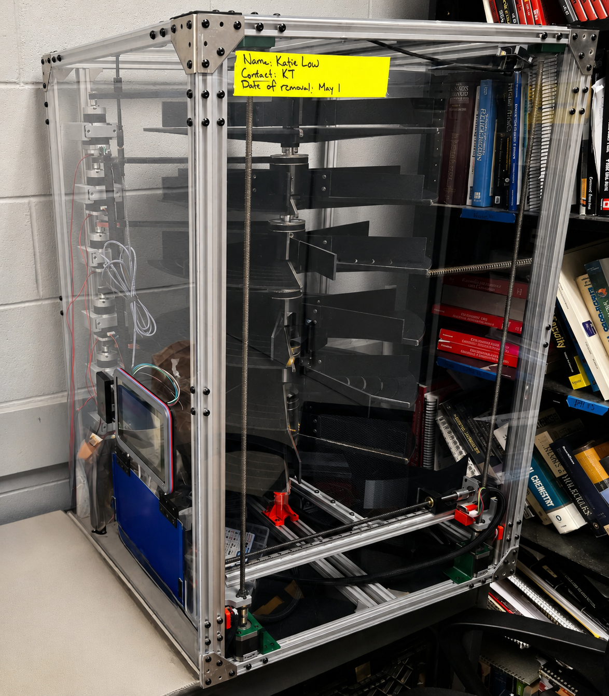
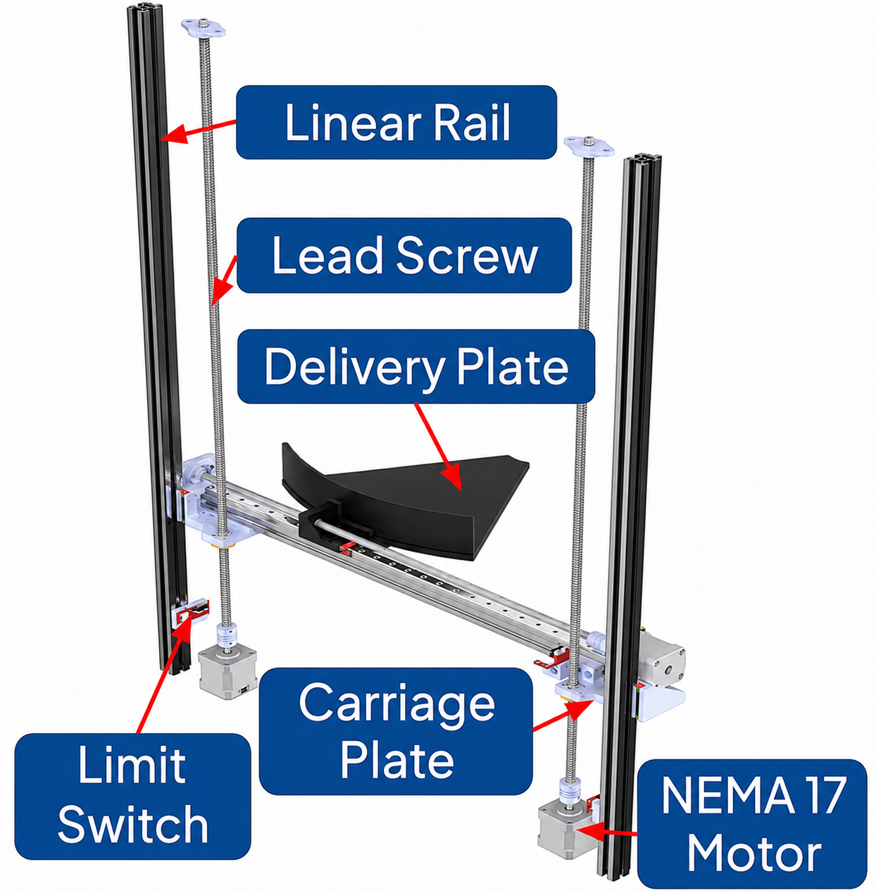
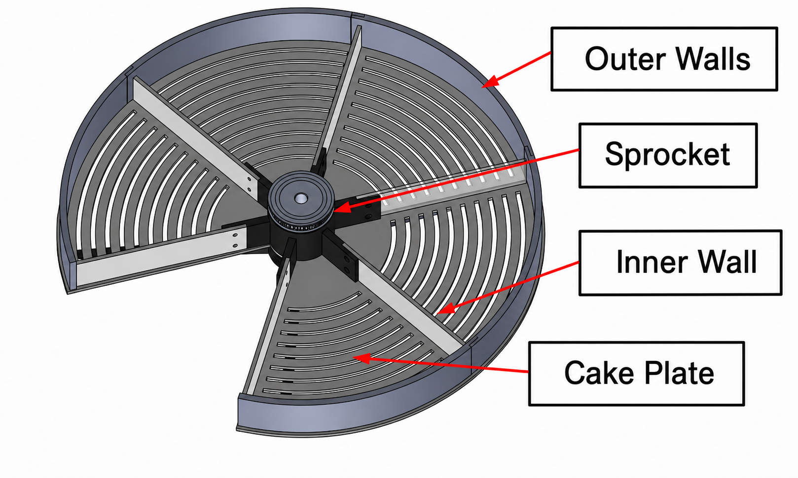
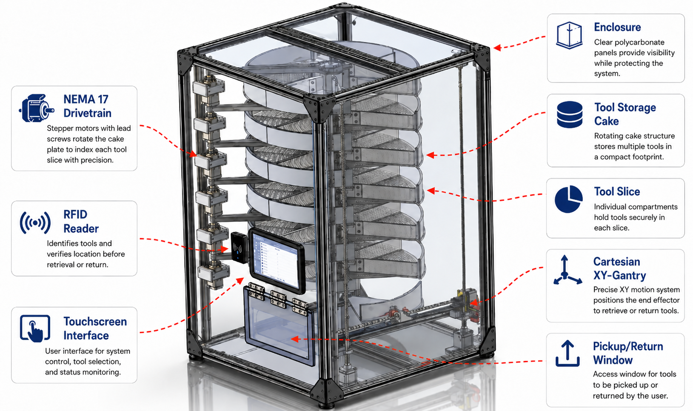

Haven: Robotic Tool Vending Machine
Overview
Haven is a secure, automated tool checkout kiosk designed for student-run makerspaces. The system was built for the UBC Integrated Engineering shop, where over 250 users and 30+ capstone projects create heavy demand for shared tools. The final concept combines a rotary storage system, a vertical Cartesian XY gantry, RFID-based tool tracking, and a compact enclosure into one self-serve kiosk.
My work focused on the mechanical and mechatronics side: turning the storage concept into manufacturable hardware, designing and assembling the gantry, supporting the rotary tool cake and enclosure design, and validating the integrated dispense and return workflow through testing.

Mechanical Design
The mechanical design began with concept ideation around how to store many tools compactly while still allowing one tool to be dispensed at a time. Early ideas included locker-style storage, drawer-based retrieval, and belt-driven handling systems. The final report selected the rotary “tool cake” and Cartesian gantry approach because it separated the problem into two clear functions: indexed storage and controlled delivery.
From there, the mechanical work flowed from architecture selection to subassembly design. The cake became the storage module, the gantry became the delivery module, and the enclosure tied them together into a safe, enclosed machine that could be fabricated and tested within the capstone timeline.
Gantry Subassembly
The delivery mechanism responsible for vertical and horizontal transfer between the rotary storage layers and the pickup window.
Cake Subassembly
The rotary storage mechanism responsible for holding tools, indexing them, and presenting a selected tool to the transfer slice.
Gantry Subassembly
The gantry was designed as a vertically mounted Cartesian XY system. CoreXY and cantilever concepts were considered, but a lead-screw and linear-rail architecture was selected because the vertical axis needed to safely support load without depending on belt tension or motor holding torque.
- Used dual vertical lead screws and a horizontal lead screw to move the transfer slice between tool layers and the user bay.
- Used linear rails to guide the carriage, reduce racking, and keep the slice aligned during tool transfer.
- Selected compact MGN9H rails based on load capacity, cost, and calculated moving mass with safety factor.
- Selected 8 mm lead screws to balance speed, torque, and compatibility with available stepper motors.
- Refined motor placement, carriage plates, and end-support details after prototype assembly revealed alignment and axial-support issues.

Cake Subassembly
The cake subassembly was the rotary storage mechanism. Instead of storing each tool in an individual drawer, each tool cake uses indexed circular layers. Rotating inner walls move tools around the layer and present only the selected tool location to the gantry transfer slice.
- Sprocket: 3D-printed ABS hub that interfaces with the drivetrain and rotates the inner walls.
- Inner walls: ABS wall elements that push tools around the cake during indexing.
- Outer walls: Modular 3D-printed PLA walls that retain tools on the plate and simplify replacement.
- Cake plate: Waterjet ABS plate bonded to a 3D-printed rib structure for stiffness and manufacturability.
- Drivetrain: NEMA 17 stepper motor, 10:1 planetary gearbox, timing belt, pulleys, and a tensioning mount for quiet indexed rotation.

Final Integrated Design
The final CAD brought the gantry, tool cakes, drivetrain, user access window, electronics bay, and polycarbonate enclosure into one integrated machine. This full-system model was important because the critical design problem was not just making each subassembly work independently; it was making the transfer slice, cake opening, tool path, and enclosure clearances line up consistently.

Mechanical Testing
Mechanical testing followed the same flow as the design: first validating the gantry and cake as individual subassemblies, then combining them in integrated dispense and return testing. This helped isolate whether failures came from motion, stiffness, indexing, or the transfer interface.
Gantry Testing
The gantry was tested as a single vertical leg, then as a full XY mechanism, and finally inside the enclosure. It supported 2.5 kg during early tests and later moved a 3.5 kg load during integrated dynamic testing without skipped steps or overheating. The final gantry reached the required storage levels and achieved speeds up to 80 mm/s.
Cake Testing
The cake plate was checked with FEA for distributed and edge loads, then physically tested through indexed 60-degree rotations. When tool friction caused the cake plate to rotate unintentionally, the design was revised with a set screw and reduced-contact geometry to improve positional consistency.
- Completed 152 integrated dispense and return cycles using tools with different geometries across multiple storage levels.
- Most failures were concentrated in the return workflow, especially for longer and heavier tools, showing that the transfer interface was the key mechanical refinement area.
- Mechanical refinements included stiffening the transfer slice, constraining the cake plate, quieting motor motion through driver configuration, and improving local clearances at the cake-slice interface.
Electrical System
The electrical system tied the mechanical modules into a controlled mechatronic platform. A Raspberry Pi handled the higher-level system logic, while a BTT Octopus Max EZ running Klipper controlled the stepper-driven gantry and cake motion.
- Integrated stepper control for the gantry axes and rotary tool cake drivetrain.
- Used RFID for user and tool identification so the system could associate each checkout or return with a specific user.
- Included limit switches, magnetic angle sensing, power distribution, and wiring management to support repeatable motion and safer operation.
- Moved toward a centralized control architecture to reduce wiring complexity and simplify debugging during full-system integration.
Software Interface
The software layer connected the user workflow to the physical machine. Users could authenticate, select a tool, and trigger a dispense workflow, while the backend tracked inventory state and tool ownership.
- Built around a mobile web interface for tool selection and checkout.
- Tracked tool inventory, user checkout status, return validation, overdue tools, and administrative controls.
- Included admin workflows for user management, tool management, alerts, and manual gantry/cake adjustment.
- Containerized the software stack on the Raspberry Pi for easier deployment, debugging, and iteration.
Results
- Delivered a working end-to-end prototype that could authenticate users, retrieve tools from storage, dispense them to a user bay, and support returns
- Reduced tool loss to zero since deployment
- System has been used over 250 times by students with no major issues
- Key takeaway: reliable automation depended less on any single subsystem and more on the physical interface between the gantry, rotary cake, sensors, and control logic